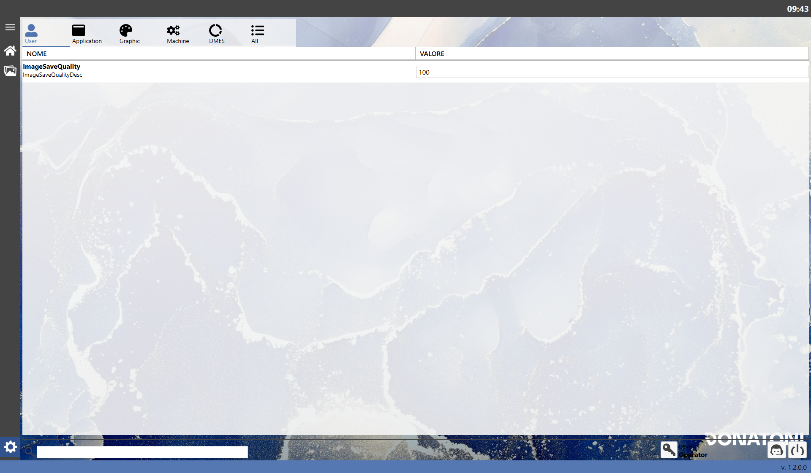
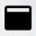
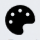
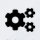
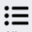

La seguente schermata è la pagina delle impostazioni, che permette all’utente di configurare vari parametri di sistema o visualizzare altri non modificabili per comprendere il sistema.

Tabs
Le impostazioni sono suddivise in sezioni visualizzabili cliccando sulle icone in alto:
User | |
 | Application |
 | Graphic |
 | Machine |
DMES | |
 | All |
User
Titolo | Descrizione | Formato da inserire |
ImageSaveQuality | Indica la qualità con cui salvare le immagini | Numero intero |
Application
Titolo | Descrizione | Formato da inserire |
Language | Consente di selezionare la lingua del sistema. | Selezione(IT, EN) |
Decimal Digits Numbers | Indica quanti decimali di un valore numerico mostrare dopo la virgola. | SOLA LETTURA |
Decimal Digits Numbers Accuracy | Indica quanti decimali di un valore numerico di precisione mostrare dopo la virgola. | SOLA LETTURA |
Current Project | Indica il percorso del progetto di sistema in esecuzione. | SOLA LETTURA |
Current Solution | Indica il percorso della soluzione di sistema in esecuzione. | SOLA LETTURA |
Path Remote Assistance Program | Indica il percorso in cui si trova il programma di Teleassistenza. | SOLA LETTURA |
DateTime format for statistics | Specifica il formato di date e orari. | SOLA LETTURA |
Time format for statistics | Specifica il formato degli orari. | SOLA LETTURA |
Graphic
Titolo | Descrizione | Formato da inserire |
Perimeter Handles Diameter | Permette di impostare il diametro dei cerchi di selezione dei vertici del perimetro in 2.3 Modifica lastra | Numero intero |
Machine
Titolo | Descrizione | Formato da inserire |
Minimum length difference | Indica il valore minimo per il confronto di differenza di lunghezze | SOLO LETTURA |
Minimum radian difference | Indica il valore minimo per il confronto di differenza di angoli in radianti | SOLO LETTURA |
Minimum degrees difference | Indica il valore minimo per il confronto di differenza di angoli in gradi | SOLO LETTURA |
DMES
In questa sezione non sono presenti impostazioni, in quanto non contiene informazioni rilevanti per l’utilizzo generale.
Tuttavia, i dati risultano utili agli operatori con accesso amministrativo al sistema.
Pulsanti
Nella sezione in basso sono presenti azioni generali eseguibili.
Accesso amministratore | |
Richiedi assistenza | |
Spegni |